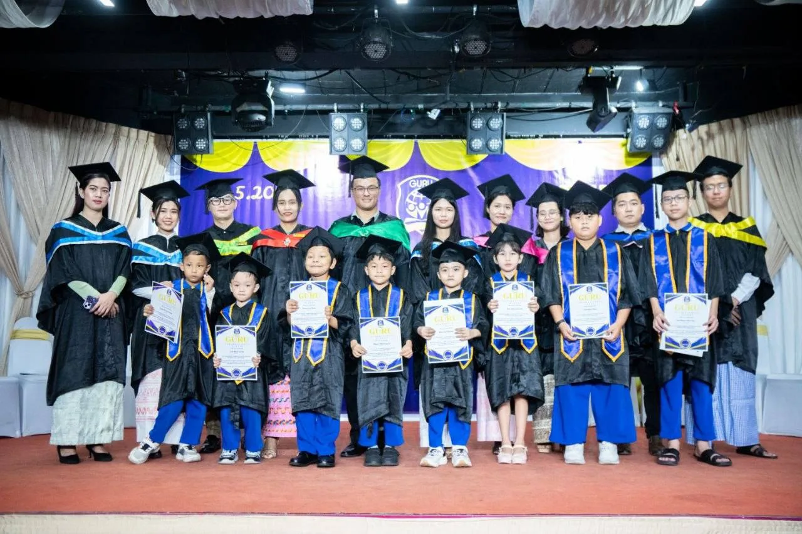

AGES 2–4
Early years
A nurturing beginning, with child-centred learning and room to explore.
- Play SchoolAge 2
- Pre-NurseryAge 3
- NurseryAge 4
Early Year Foundation Stage
Talk about early years ↗︎Programmes
Explore Guru’s early years and primary programmes, then talk with our team about the right next step for your child.
02 / FIND THEIR STARTING POINT
Little steps, thoughtfully connected.From the first “why?” to the next big idea.
Explore our early years and primary pathways.
AGES 2–4
A nurturing beginning, with child-centred learning and room to explore.
Early Year Foundation Stage
Talk about early years ↗︎AGES 5–7
Build confidence, discover new ideas, and develop a love for learning.
Key Stage 1
Explore their next step ↗︎AGES 8–11
Deepen curiosity and develop skills to contribute positively to the world.
Key Stage 2
Discover upper primary ↗︎COME MEET GURU
YOUR NEXT DISCOVERY

Campus
Explore Guru’s classrooms, play spaces and facilities in San Chaung, Yangon.
Explore Campus ↗︎
Our people
Get to know the leadership and people guiding our school community.
Explore Our people ↗︎
Gallery
Browse school celebrations, learning spaces, graduation, trips and student activities.
Explore Gallery ↗︎